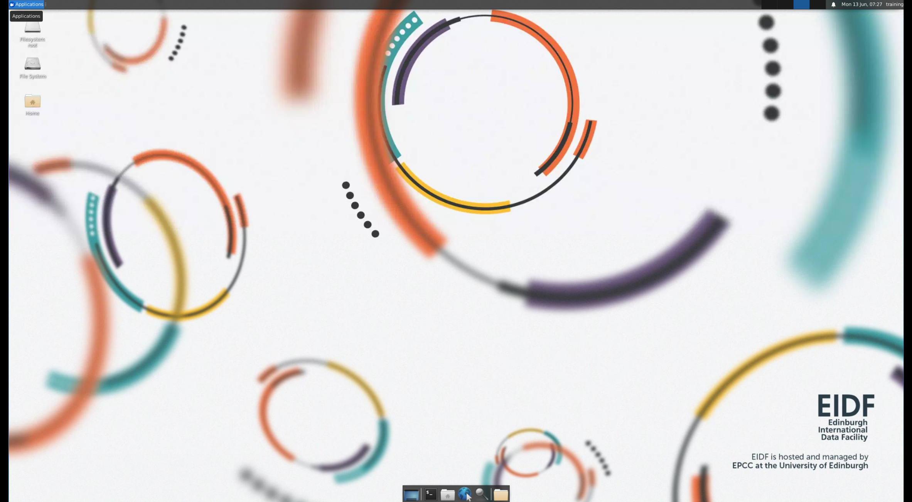

Virtual Machines (VMs) and the EIDF Virtual Desktop Interface (VDI)
Using the EIDF VDI, members of EIDF projects can connect to VMs that they have been granted access to. The EIDF VDI is a web portal that displays the connections to VMs a user has available to them, and then those connections can be easily initiated by clicking on them in the user interface. Once connected to the target VM, all interactions are mediated through the user's web browser by the EIDF VDI.
Login to the EIDF VDI
Once your membership request to join the appropriate EIDF project has been approved, you will be able to login to the EIDF VDI at https://eidf-vdi.epcc.ed.ac.uk/vdi.
Authentication to the VDI is provided by SAFE, so if you do not have an active web browser session in SAFE, you will be redirected to the SAFE log on page. If you do not have a SAFE account follow the instructions in the SAFE documentation how to register and receive your password.
Navigating the EIDF VDI
After you have been authenticated through SAFE and logged into the EIDF VDI, if you have multiple connections available to you that have been associated with your user (typically in the case of research projects), you will be presented with the VDI home screen as shown below:
VDI home page with list of available VM connections
Adding connections
Note that if a project manager has added a new connection for you it may not appear in the list of connections immediately. You must log out and log in again to refresh your connections list.
Connecting to a VM
If you have only one connection associated with your VDI user account (typically in the case of workshops), you will be automatically connected to the target VM's virtual desktop. Once you are connected to the VM, you will be asked for your username and password as shown below (if you are participating in a workshop, then you may not be asked for credentials)
Warning
If this is your first time connecting to EIDF using a new account, you have to set a password as described in Set or change the password for a user account.
VM virtual desktop connection user account login screen
Once your credentials have been accepted, you will be connected to your VM's desktop environment. For instance, the screenshot below shows a resulting connection to a Xubuntu 20.04 VM with the Xfce desktop environment.
 VM virtual desktop
VDI Features for the Virtual Desktop
The EIDF VDI is an instance of the Apache Guacamole clientless remote desktop gateway. Since the connection to your VM virtual desktop is entirely managed through Guacamole in the web browser, there are some additional features to be aware of that may assist you when using the VDI.
The VDI Menu
The Guacamole menu is a sidebar which is hidden until explicitly shown. On a desktop or other device which has a hardware keyboard, you can show this menu by pressing <Ctrl> + <Alt> + <Shift> on a Windows PC client, or <Ctrl> + <Command> + <Shift> on a Mac client. To hide the menu, you press the same key combination once again. The menu provides various options, including:
- Reading from (and writing to) the clipboard of the remote desktop
- Zooming in and out of the remote display
Clipboard Copy and Paste Functionality
After you have activated the Guacamole menu using the key combination above, at the top of the menu is a text area labeled clipboard along with some basic instructions:
Text copied/cut within Guacamole will appear here. Changes to the text below will affect the remote clipboard.
The text area functions as an interface between the remote clipboard and the local clipboard. Text from the local clipboard can be pasted into the text area, causing that text to be sent to the clipboard of the remote desktop. Similarly, if you copy or cut text within the remote desktop, you will see that text within the text area, and can manually copy it into the local clipboard if desired.
You can use the standard keyboard shortcuts to copy text from your client PC or Mac to the Guacamole menu clipboard, then again copy that text from the Guacamole menu clipboard into an application or CLI terminal on the VM's remote desktop. An example of using the copy and paste clipboard is shown in the screenshot below.
The EIDF VDI Clipboard
Keyboard Language and Layout Settings
For users who do not have standard English (UK) keyboard layouts, key presses can have unexpected translations as they
are transmitted to your VM. Please contact the EIDF helpdesk at EIDF Helpdesk if you
are experiencing difficulties with your keyboard mapping, and we will help to resolve this by changing some settings
in the Guacamole VDI connection configuration.